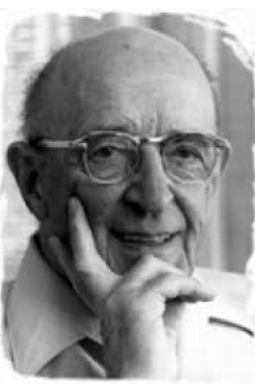

🌷 Carl Rogers 🌷
1902–1987


|
Carl Rogers was a pioneering American psychologist and one of the founders of the humanistic approach. His philosophy emphasized empathy, unconditional positive regard, and the belief that every person has the capacity to grow and heal. He created client-centered therapy, where the therapist offers a safe, accepting environment. Rogers believed change comes when people feel deeply understood. |
“The curious paradox is that when I accept myself just as I am, then I can change.”
— Carl Rogers
— Carl Rogers
💖 Core Concepts 💖
- Client-Centered Therapy
- Unconditional Positive Regard
- Congruence and Authenticity
- Empathic Understanding
- Self-Actualization

Legacy
Carl Rogers’ influence continues to shine in psychology, education, and even conflict resolution. His gentle, revolutionary approach helps people feel heard, valued, and empowered.